MASAR (MAchine Snapshot, Archiving, and Retrieve) is an EPICS V4 service. The server and client are implemented in C++ and Python. The server takes machine snapshots, archives data in a relational database, and retrieves data from the database. The client provides a GUI that retrieves data, compares data with the live machine, and restores the machine with given snapshot data. The client also provides support for other python and C++ code.
The server takes machine snapshot by using pre-defined configurations. To take a snapshot the client specifies the name of the snapshot configuration and a name for this snapshot event.When the server receives a command to take a machine snapshot, the server retrieves, from the database, the list of V3 channel names for the configuration. It then gets the current value of all the channels from V3 IOC, and saves the data as a snapshot event into the database.
This is the 13-Mar-2012 version of the MASAR User Manual.
MASAR is implemented in C++ and Python. Network communication is implemented via the EPICS V4 channelRPC mechanism . The current implementation uses SQLite3 for the relational database. A Python module PYMASAR provides access to SQLite3.
Since EPICS V4 channelRPC server is implemented in C++, the interface between the masar server and PYMASAR is implemented using Python/C. A Python API is provided for the client user, and a default PyQt4 GUI is developed for end user.
The products are all part of the V4 implementation of Experimental Physics and Industrial Control System, which are available via an open source license.
For now the only way to obtain the MASAR service is from the sourceforge mercurial repository. No binary package is currently provided. Like other EPICS V4 modules, MASAR service can be checked out from its mercurial repository on source forge.
GUOBAO IS THE FOLLOWING NECESSARY If there is an error such as
abort: error: Connection refusedduring checking out, it probably means that you have some problems with your network setting, for example http proxy setting. You can try to set your http_proxy environment, for example, on BASH shell:
export http_proxy=http://your.proxy.server.name:port
To run MASAR on you machine, Python and various EPICS V3 and V4 run-time library are required for both client and server.
Python:
EPICS modules:
For MASAR server, you need:
For MASAR client default GUI:
Currently, MASAR has been installed on the following systems:
| 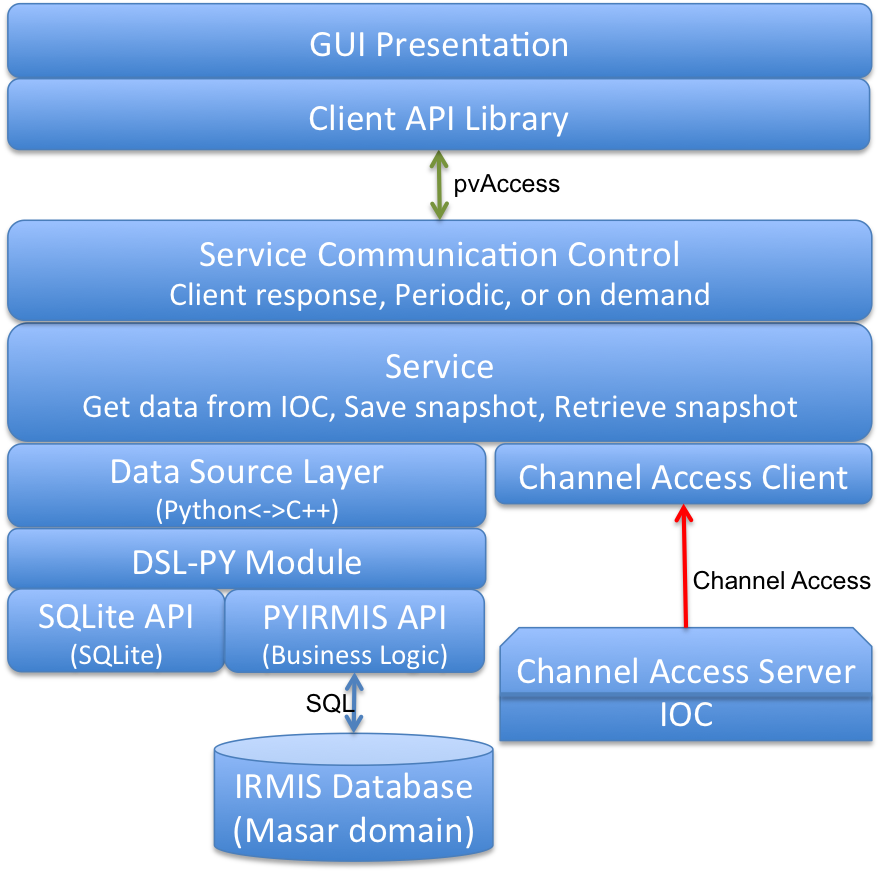 |
| MASAR Architecture |
The client has a client Python API library, which can be used by both Python scripting, and the GUI. A default PyQt4 GUI is developed for data viewing, snapshot taking, comparing a snapshot with live machine, and restoring machine to a particular status using a snapshot.
The server has 4 layers:
| epics data type | data type carried by MASAR |
| enum, string | string |
| byte, short, int/long | long |
| float, double | double |
NOTE:
The MASAR supports 6 fundamental functions:
When a MASAR request is sent from client to server, NTNameValue type is used to carry parameters, which is as below:
structure NTNameValue string[] names string[] values string function xxxxxx // function name as aboveThe name/value pair is converted into a Python dictionary inside service layer, and transferred to PYMASAR/PYIRMIS layer. Acceptable names for above 6 functions are listed as below:
retrieveServiceConfigProps:
names = ["propname", "servicename", "configname"]
retrieveServiceConfigs:
names = ["servicename", "configname", "system"]
retrieveServiceEvents:
names = ["configid", "start", "end", "comment", "user"]
retrieveSnapshot:
names = ["eventid", "start", "end", "comment"]
saveSnapshot:
names = ["servicename","configname","comment"]
updateSnapshotEvent:
names = ["eventid", "user", "desc"]
The results from server are carried using a NTTable as below:
structure NTTable
structure timeStamp
long secondsPastEpoch 0
int nanoSeconds 0
int userTag 0
structure alarm
int severity 0
int status 0
string message
string[] label [...]
... // value field
| 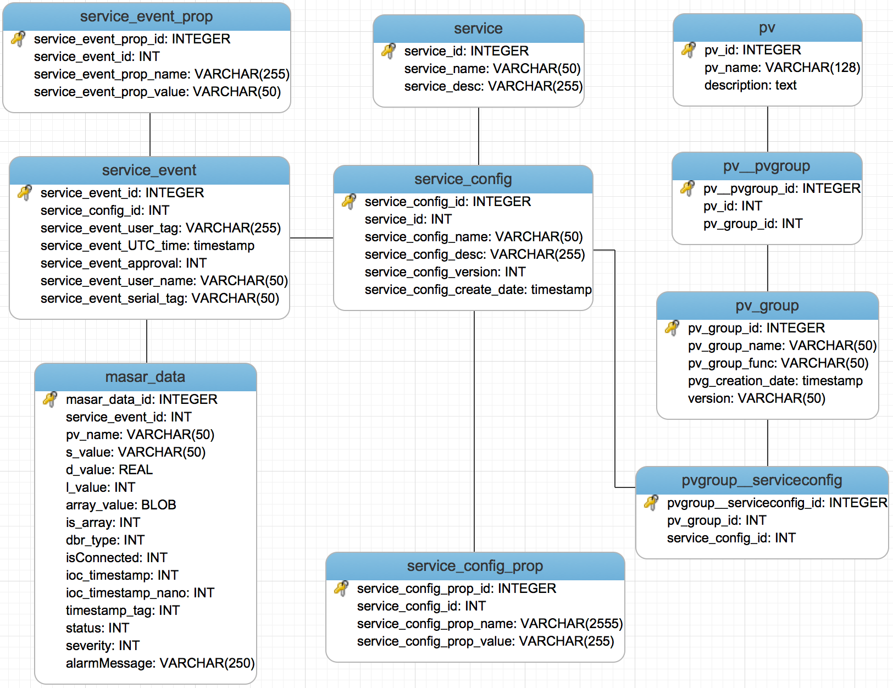 |
| MASAR SQLite3 Schema |
| 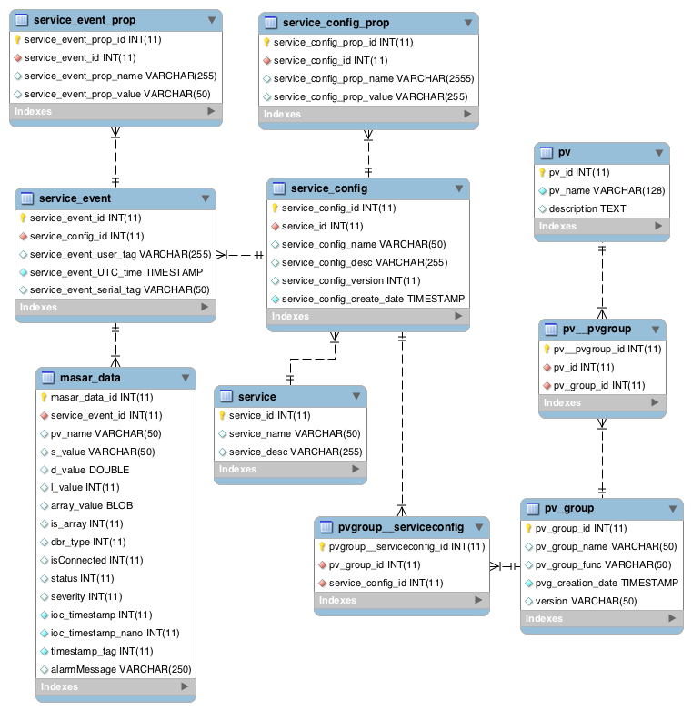 |
| MASAR IRMIS Schema |
This section is for SQLite3 database only. The files for SQL are located in directory:
masarService/python/pymasar/db
The generated data base will be stored in a place You specify. You also need to create a directory that holds text files that each has a list of V3 channel names. There is an example directory located in:
masarService/example
It has a subdictory pvs that has example channel list files. For example pvs/example.txt contains:
masarExample0000 masarExample0001 ... masarExample0999
The SQL file is masars-qlite.sql. File createSqliteDb.py is the Python script that create an SQLite3 database. . An example of how tp create a MASAR datatbase is:
$cd masarService/example $python ../python/pymasar/db/createSqliteDb.pyThis creates a new MASAR database called "masar.db" that is located in the example directory. If there is an error like:
create a new SQLite db.
Traceback (most recent call last):
File "../python/pymasar/db/createSqliteDb.py", line 109, in < module>
createSqliteDb()
File "../python/pymasar/db/createSqliteDb.py", line 59, in createSqliteDb
from pymasar.db.masarsqlite import SQL
ImportError: No module named pymasar.db.masarsqlite
Check the PYTHONPATH setting.
If the "masar.db" exists already, you will be asked
SQLite database masar.db exists already. Do you want to overwrite it? Yes, [N]o (default = No):
Choose Yes to overwrite current masar.db file, otherwise No.
If you want give database file a name instead of using default "masar.db", you can do
$ python ../python/pymasar/db/createSqliteDb.py -db test.db SQLite3 database: test.db create a new SQLite db: test.db.
After created MASAR database, an environment variable needs to be set as (BASH environment)
export MASAR_SQLITE_DB=~/V4/masarService/example/masar.dbIf the database is named differently, use right database file name.
This section is also only for an SQLite3database and again the files described below are located in:
masarService/python/pymasar/db
After creating the SQLite3 database, it has to be initialized, and some information about service configuration have to be configured in advance before allowing MASAR server uses it.
The database configuration, which is an administrative work, is separated from MASR service, and could be done through calling PYMASAR API. A Python Script, setmasardb.py initialize the database. This is also located in:
masarService/python/pymasar/db
The following is an example showing how to configure MASAR database.
Site-specific information is configured in settings.p, which has format as below:
# pv group name: [pv list file, description]
pvgroups= {
'test': ['example.txt', 'server test'],
'wftest': ['exampleWf.txt', 'server test with waveform'],
'bigwftest': ['exampleBigWf.txt', 'server test with big waveform']
}
# config name: [config desc, system]
configs= {
'sr_test': ['test pv config', 'test'],
'wf_test': ['waveform test pv config', 'test'],
'bwf_test': ['big waveform test pv config', 'test']
}
# config name: [pvgroup,]
pvg2config= {
'sr_test': ['test'],
'wf_test': ['wftest'],
'bwf_test': ['wftest', 'bigwftest']
}
There are 3 variables defined in settings.py
After the settings.py is configured, setmasardb.py creaates the database. Assume the database is called masar.db, and is located in masarService/example
$ python ../python/pymasar/db/setmasardb.pyit requests the absolute path of pv list file directory.
Please give absolute ROOT PATH of your pv list files [default: /home/xxxx/V4/masarService/python/pymasar/db/pvs]:here give the pv list directory PATH, for example /home/xxxx/V4/masarService/pvs:
/home/xxxx/V4/masarService/example/pvs
Use new ROOT: /home/xxxx/V4/masarService/example/pvs
If the path is wrong, it raises an exception. After loading pv names into database, it tries to save configuration. If a configuration exists already, it reports for example, and ignores that configuration:
configuration name (bwf_test) exists already. configuration name (sr_test) exists already. configuration name (wf_test) exists already.
After finished the database configuration, it is ready to launch MASAR server.
At current stage, all EPICS V4 packages are available as source code, which can be checked out from by sourceforge mercurial repository. To compile all V4 module Python 2.7 and EPICS V3 development packages must be installed. EPICS V3 base is available as a Debian package from NSLS-II Debian package server. Here we assume EPICS V3 base is installed under /usr/lib/epics.
A step-by-step installation is introduced here, and the example is to show how to install whole packages on Ubuntu 11.04 x86_64 system. You should be able to install all modules on other systems following the same procedure. You can check your system architecture using for example on linux:$ uname -m
x86_64
$ cd $ mkdir V4 $ cd V4 $ hg clone http://epics-pvdata.hg.sourceforge.net/hgroot/epics-pvdata/pvDataCPP $ hg clone http://epics-pvdata.hg.sourceforge.net/hgroot/epics-pvdata/pvAccessCPP $ hg clone http://epics-pvdata.hg.sourceforge.net/hgroot/epics-pvdata/pvIOCCPP $ hg clone http://epics-pvdata.hg.sourceforge.net/hgroot/epics-pvdata/alphaCPP $ hg clone http://epics-pvdata.hg.sourceforge.net/hgroot/epics-pvdata/masarServiceNOTE: Make sure you have following line in each module in configure/RELEASE. Suggest to put it as the last line if it is not.
-include $(TOP)/configure/RELEASE.local
$ cd pvDataCPPAdd the following to configure/RELEASE.local
EPICS_BASE=/usr/lib/epicsThen
$ make
$ cd ../pvAccessCPP<Add the following to configure/RELEASE.local
PVDATA=~/V4/pvDataCPP EPICS_BASE=/usr/lib/epicsThen
$ make
$ cd ../pvIOCCPPAdd the following to configure/RELEASE.local
PVDATA=~/V4/pvDataCPP PVACCESS=~/V4/pvAccessCPP EPICS_BASE=/usr/lib/epicsThen
$ make
$ cd ../alphaCPP/normativeTypes/Add the following to configure/RELEASE.local
PVDATA=~/V4/pvDataCPP PVACCESS=~/V4/pvAccessCPP EPICS_BASE=/usr/lib/epicsThen
$ make
$ cd ../../masarService/cppAdd the following to configure/RELEASE.local
PYTHON=python2.7
PYTHON_BASE=/usr
$(PYTHON)_DIR = $(PYTHON_BASE)/lib/$(PYTHON)/config
NUMPY_CORE=${PYTHON_BASE}/lib/${PYTHON}/site-packages/numpy/core
PVDATA=~/V4/pvDataCPP
PVACCESS=~/V4/pvAccessCPP
PVIOC=~/V4/pvIOCCPP
NTTYPE=~/V4/alphaCPP/normativeTypes
EPICS_BASE=/usr/lib/epics
Then
$ makeThe installation procedure is complete if the above is successful.
After installing all required modules and configuring the sql database the last step is to prepare and check the Python environment.
$ cd $ cd ~/V4/masarService/cpp/src/python $ python generateSOLinks.pyIf you did not set EPICS_HOST_ARCH environment, you will be promoted as below:
EPICS_HOST_ARCH is not setted.
Please specify EPICS_HOST_ARCH:
You can specify your host architecture here, for example, linux-x86_64 if you are using a 64-bit linux machine. An error will occur as below if the EPICS_HOST_ARCH is wrong:
EPICS_HOST_ARCH is not setted.
Please specify EPICS_HOST_ARCH:linux-x86
Traceback (most recent call last):
File "generateSOLinks.py", line 32, in <module>
fileList = os.listdir(libDir)
OSError: [Errno 2] No such file or directory: '../../lib/linux-x86'
An alternative solution is to set the environment before running
generateSOLinks.py, for example:
$ export EPICS_HOST_ARCH=linux-x86_64
$ export PYTHONPATH=~/V4/masarService/python
export PYTHONPATH=${PYTHONPATH}:~/V4/masarService/cpp/src/python
export PYTHONPATH=${PYTHONPATH}:~/V4/masarService/python/client
export PYTHONPATH=${PYTHONPATH}:~/V4/masarService/python/server
export MASAR_SQLITE_DB=~/V4/masarService/example/masar.db
Now it is ready to go.
The following packages are needed to run MASAR server.
$ cd ~/V4/masarService/cpp $ ./bin/linux-x86_64/masarServiceRunYou will see the following output
ChannelBaseProvider::ChannelBaseProvider pvService VERSION : CA Server v0.9.0 PROVIDER_NAMES : pvService BEACON_ADDR_LIST : AUTO_BEACON_ADDR_LIST : 1 BEACON_PERIOD : 15 BROADCAST_PORT : 5067 SERVER_PORT : 5066 RCV_BUFFER_SIZE : 16384 IGNORE_ADDR_LIST: STATE : INITIALIZED masarService Type exit to stop:
You have started the server now successfully. However, if you see this output:
ChannelBaseProvider::ChannelBaseProvider pvService
VERSION : CA Server v0.9.0
PROVIDER_NAMES : pvService
BEACON_ADDR_LIST :
AUTO_BEACON_ADDR_LIST : 1
BEACON_PERIOD : 15
BROADCAST_PORT : 5067
SERVER_PORT : 5066
RCV_BUFFER_SIZE : 16384
IGNORE_ADDR_LIST:
STATE : INITIALIZED
DSL_RDB::init dslPY does not exist or is not a python module
masarService
Type exit to stop:
which means either the PYTHONPATH is not set correctly, or MASAR can not find. Check the MASAR_SQLITE_DB and PYTHONPATH.
$ cd ~/V4/masarService/cpp $ ./bin/linux-x86_64/masarServiceRun MASARSERVICE:TEST:EXAMPLEit will shows
ChannelBaseProvider::ChannelBaseProvider pvService
VERSION : CA Server v0.9.0
PROVIDER_NAMES : pvService
BEACON_ADDR_LIST :
AUTO_BEACON_ADDR_LIST : 1
BEACON_PERIOD : 15
BROADCAST_PORT : 5067
SERVER_PORT : 5066
RCV_BUFFER_SIZE : 16384
IGNORE_ADDR_LIST:
STATE : INITIALIZED
MASARSERVICE:TEST:EXAMPLE
Type exit to stop:
To stop server, type "exit" and you will get the following message:
Type exit to stop: exit ServiceChannelRPC::~ServiceChannelRPC() MasarService::destroy() PVServiceProvider::unregister PVServiceProvider::~PVServiceProvider PVServiceProvider::destroy void PVTop::destroy() PVTop::~PVTop() MasarService::~MasarService() close SQLite3 connection. ChannelBaseProvider::~ChannelBaseProvider timerNode: totalConstruct 1 totalDestruct 1 blockingUDPTransport: totalConstruct 1 totalDestruct 1 timer: totalConstruct 1 totalDestruct 1 LinkedList: totalConstruct 4 totalDestruct 4 LinkedListNode: totalConstruct 6 totalDestruct 6 event: totalConstruct 5 totalDestruct 5
client.retrieveSystemList()
Retrieve all system and return as a list, or False if failed.
client.retrieveServiceConfigs(params)
Retrieve all configuration information. The params is as a dictionary which can
have any combination of the following keys:
key names:
["servicename", "configname", "system"]It returns all configurations that satisfies the search constrains, or False if failed:
config id [] config name [] config description [] version []The version is a reserved function for future.
client.retrieveServiceEvents(params)
Retrieve all events including event id, user comment, user name, and UTC
time.
It retrieves all events without any V3 IOC data. The params is as a dictionary
which can have any combination of the following keys:
key names:
["configid", "start", "end", "comment", "user"]The value of each key needs to be a string. The "start" and "end" is for time range in UTC format.
event id [] event description [] UTC date time [] author/user []
client.retrieveSnapshot(params)
Retrieve a particular snapshot, which is flagged to be an approved snapshot,
with all pv data.
The params is as a dictionary which can have any combination of the following
keys:
key names:
["eventid", "start", "end", "comment"]The value of each key needs to be a string. The "start" and "end" is for time range in UTC format.
pv name [] string value [] double value [] long value [] dbr_type [] isConnected [] secondsPastEpoch [] nanoSeconds [] alarmSeverity [] alarmStatus [] is_array [] array_value [[]]For a scalar pv, its value is carried in string, double and long. For a waveform/array, its value is carried in array_value. Client needs to check the pv is an array by checking is_array, and check its data type by checking dbr_type.
# DBR_TYPE definition defined in db_access.h
#define DBF_STRING 0
#define DBF_INT 1
#define DBF_SHORT 1
#define DBF_FLOAT 2
#define DBF_ENUM 3
#define DBF_CHAR 4
#define DBF_LONG 5
#define DBF_DOUBLE 6
#define DBF_NO_ACCESS 7
# type mapping in python
epicsLong = [1, 4, 5]
epicsString = [0, 3]
epicsDouble = [2, 6]
epicsNoAccess = [7]
client.saveSnapshot(params)
Save a snapshot into database, and does not flag it to be approved.
The params is as a dictionary which can have any combination of the following
keys:
key names:
["servicename","configname","comment"]The value of each key needs to be a string. It saves all data into database, and returns the same data back to the client, which means the return data is same the retrieveSnapshot function.
client.updateSnapshotEvent(params)
Flag a particular snapshot to be approved..
The params is as a dictionary which can have any combination of the following
keys:
key names:
["eventid", "user", "desc"]The value of each key needs to be a string. It returns True if succeeded, otherwise, false.
client.getLiveMachine(params)
Get live data with given pv list. Following the same params format, it uses pv
name as both key and value. It returns
pv name [] string value [] double value [] long value [] dbr_type [] isConnected [] is_array [] array_value [[]]Same as retrieveSnapshot function, for a scalar pv, its value is carried in string, double and long. For a waveform/array, its value is carried in array_value. Client needs to check the pv is an array by checking is_array, and check its data type by checking dbr_type.
$ python masarClient MASARSERVICE:TEST:EXAMPLEA GUI will be launched as:
| 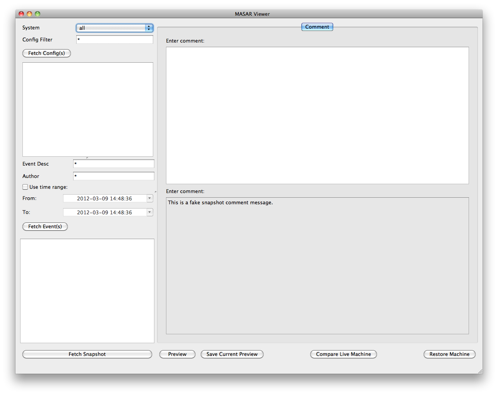 |
| MASAR Main Page |
| 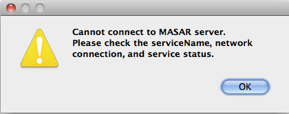 |
| MASAR No Service Dialog |
| 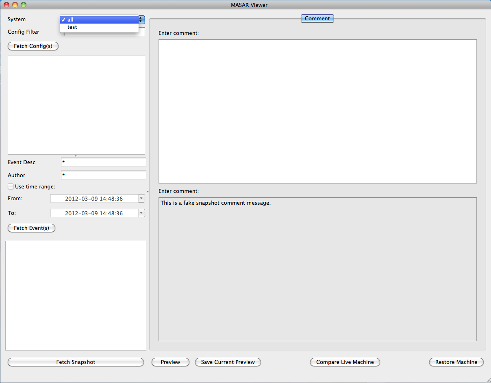 |
| System selection |
| 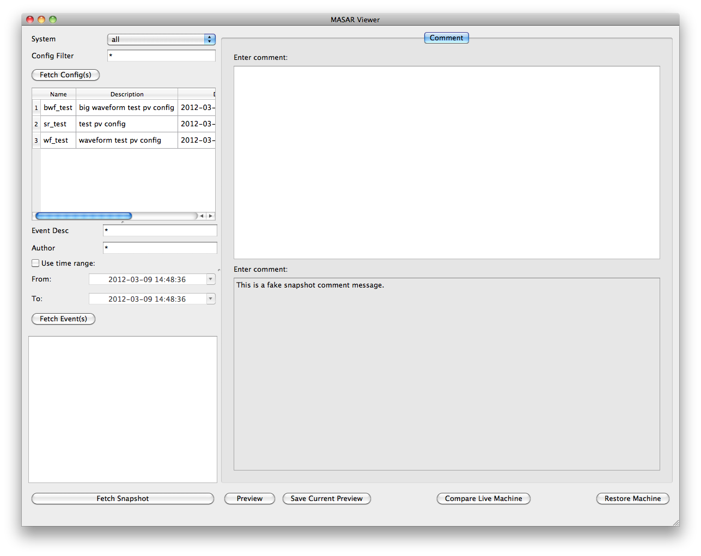 |
| MASAR Configuration List |
| 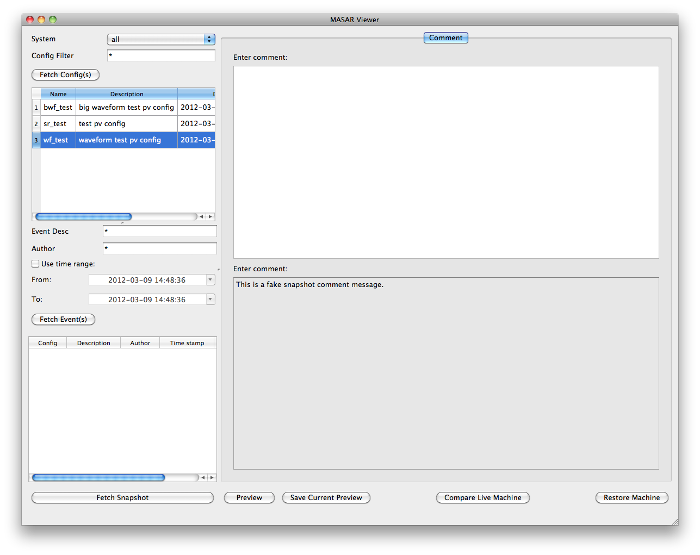 |
| MASAR Event List |
|
| MASAR Snapshot Preview |
| 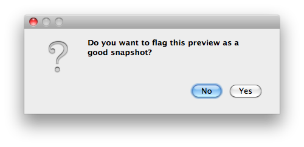 |
| MASAR Approval Dialog |
| 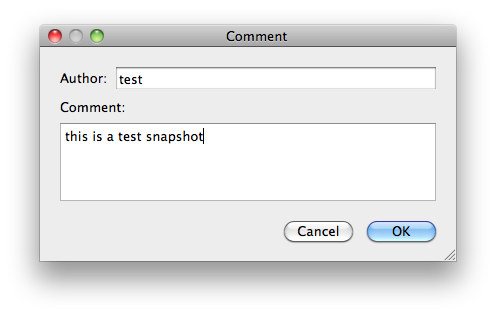 |
| MASAR Snapshot Comment |
| 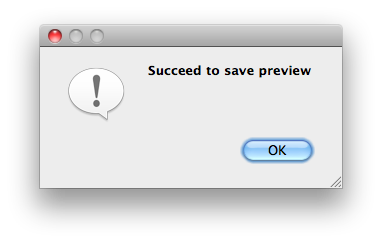 |
| MASAR Snapshot Approved |
| 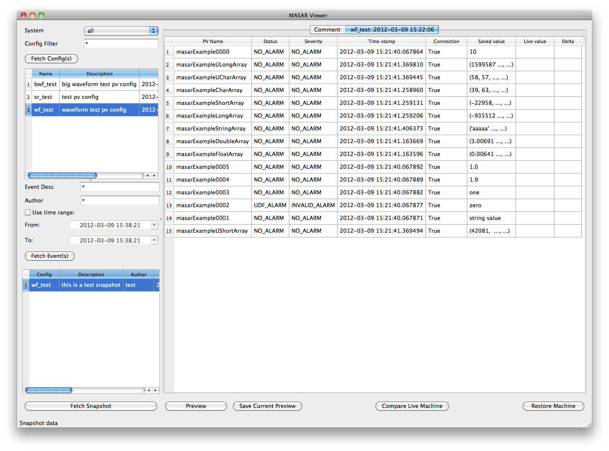 |
| MASAR Snapshot |
| 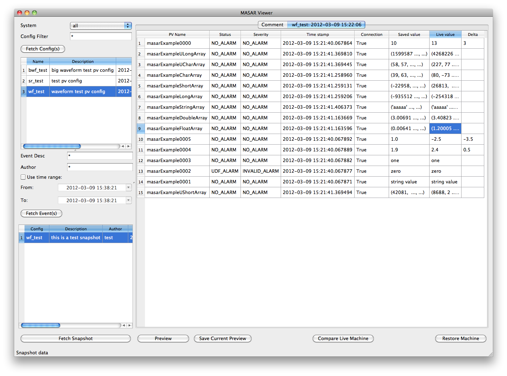 |
| MASAR Compare a Snapshot With Live Machine |
| 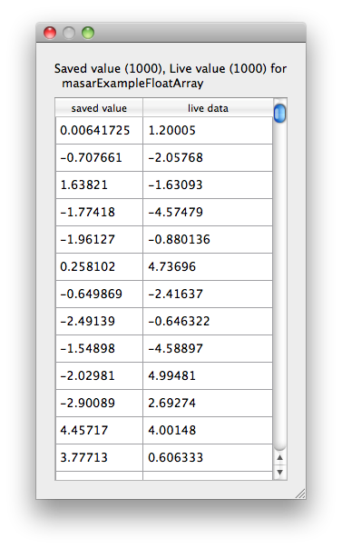 |
| MASAR Compare Array PV |
| 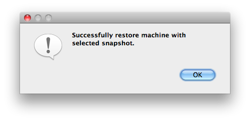 |
| MASAR Restore Confirmation |
| 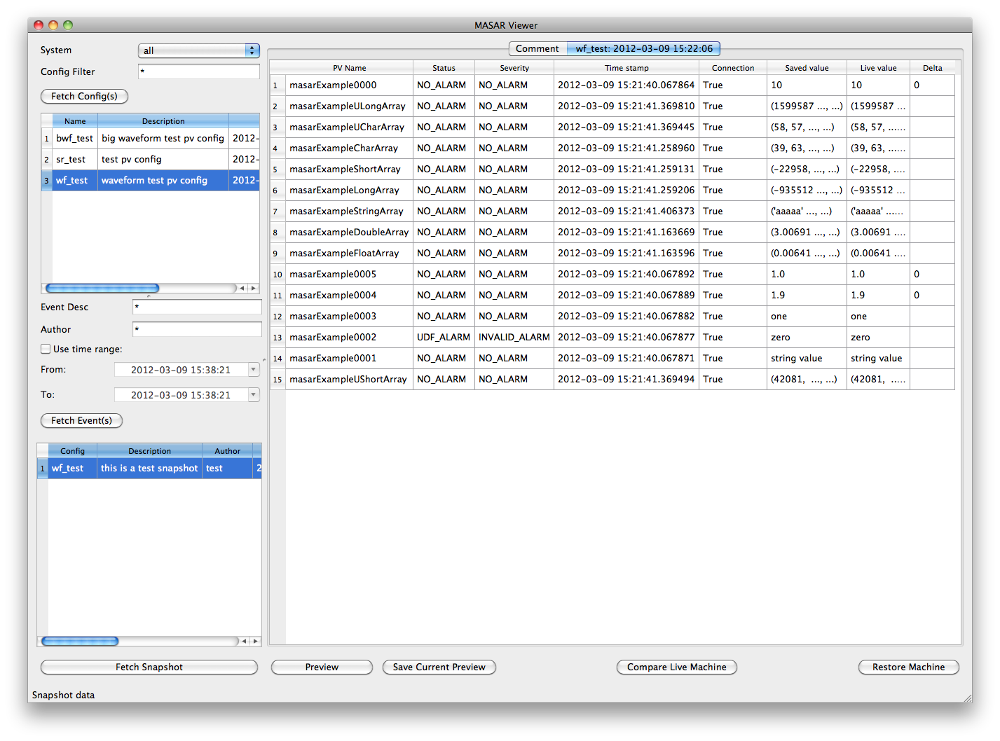 |
| MASAR Compare Restore Result |